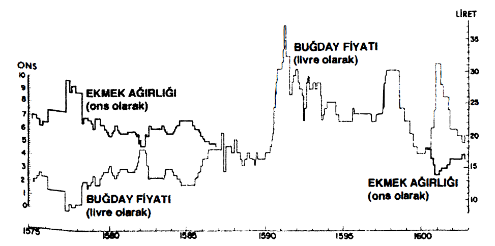
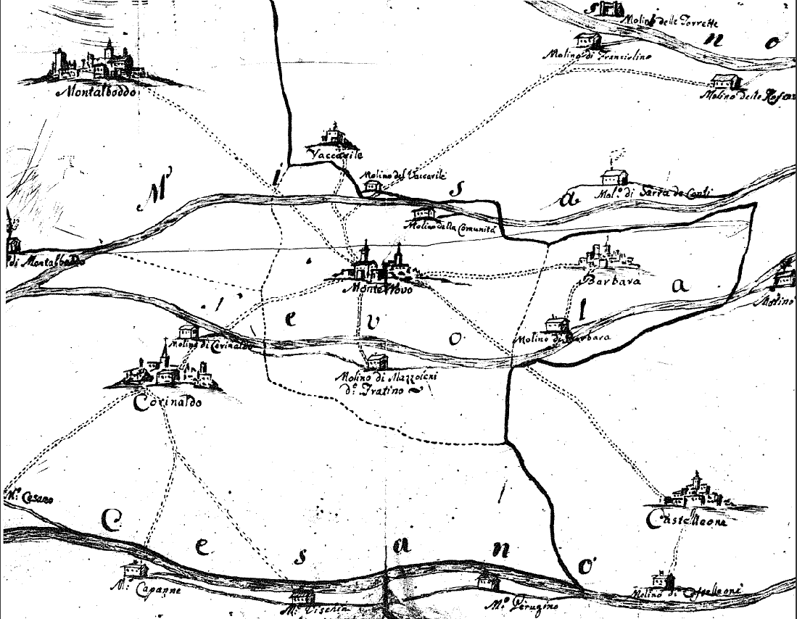

Buğday ve buğdaycık olduğu gibi, ekmek ve ekmekçik vardır. Aralık 1362'de Poitiers'de “buğdayın sefier'sinin fiyatı 24 sou'ya ulaştığında, 4 çeşit ekmek bulunmaktadır: tuzsuz choyne ekmeği, tuzlu choyne ekmeği, sofleur ekmeği ve reboulet ekmeği.” Tuzlu veya tuzsuz choyne ekmeği, elenmiş undan yapılma, yüksek nitelikli beyaz ekmekti. Sofleur ekmeği (terim bugün bile kullanılmaktadır) elekten geçirilmeyen unun tamamını içermekteydi. Reboulet'ye gelince, herhalde % 90 elenmiş undan yapılmaktaydı ve "Poitou lehçesinde hâlâ riboulet denilen şeyi içermekteydi. Bu dört kategori, buğdayın ortalama fiyatının sakin dönemlerine tekabül etmekteydi. Fiyatlar düşük, daha doğrusu makûl olduklarında, yalnızca 3 cinse izin verilmekteydi, ama eğer fiyatlar artarsa, birbirlerinden çok farklı 7 cins ekmek yapılabilmekteydi: gerçekte kötü ekmek yelpazesi açılmaktaydı.123 Hiçbir şey, eşitsizliğin kural olduğunu bundan iyi gösteremez (Poitou örneği, diğer yüzlercesinin arasından alınmıştır). Ekmek bazen yalnızca ad olarak ekmekti. Çoğu zaman da bulunmuyordu.
Eski bir geleneğe sadık kalan Avrupa, XVIII. yüzyıla kadar kaba çorbalar olan lapalarla beslenmeye devam etmiştir. Bu lapalar Avrupa'dan bile eskidirler. Etrüsklerin ve eski Romalıların puls'u darı esas olmak üzere yapılmaktaydı, başka bir lapa olan alica ise tahıl tanesi, hatta ekmekten yapılmaktaydı, içine peynir, bal ve yumurtanın katıldığı lüks bir Kartaca alica'sından söz edilmektedir. Polenta (mısırdan yapılmadan önce) kavrulmuş, sonra da öğütülmüş ve çoğu zaman da darıyla karıştırılmış arpadan yapılan bir lapadır. Artois'da XIV. yüzyılda, herhalde bundan da önce, ama kesinlikle daha sonra yulaf “kırsal halkın çok kullandığı bir lapa olan grumel yapımında” kullanılmaktaydı. XVI. yüzyılda ve XVIII. yüzyıla kadar olan dönemde Sologne'da, Champagne'da, Gaskonya'da grou adı verilen ve darı ile su veya süt karıştırılarak yapılan bir lapa vardı. XVIII. yüzyılın başında Fransa'da gruau tabipler tarafından “iyi beslenmiş yulaftan yapılmış” olması koşuluyla tavsiye edilmekteydi.
Bu eski uygulamaların hepsi de bugün yok olmamıştır. İskoç ve İngiliz porridge'i bir yulaf lapasıdır; Polonya ve Rusya'da dövülüp kavrulduktan sonra pirinç gibi pişirilen, çavdardan yapılma kacha vardır. 1809 İspanya seferi esnasında, fazla kuşku duyamayacağımız bir İngiliz el bombacısı, olanaklarıyla birlikte eski bir geleneğe katılmaktaydı: “buğdayı pirinç gibi kaynatarak hazırlıyorduk” diye anlatmaktadır, “eğer bizim için daha uygunsa, taneleri iki yassı tas arasında öğütüyor, sonra da kalın bir hamur elde edene kadar kaynatıyorduk.” 1688'de Temeşvar yakınlarında Almanlar tarafından yakalanan genç bir Türk sipahisi, Osman ağa, gardiyanların şaşkınlığına rağmen, durumu daha iyi idare etmiştir. Ordu ekmeği olan kommisbrot tükendiği için, destek eminiği askerlere un tayını dağıtmıştır (askerler iki günden beri hiçbir tayın almamışlardır). Yalnızca Osman ağa, bu unu biraz suyla hamur haline getirmeyi ve ateşin sıcak küllerinde pişirmeyi bilmiştir; söylendiğine göre, daha önce aynı durumlar başına gelmiştir. Fakat bu, Türkiye'de ve İran'da sıklıkla yenilen ekmeğin adeta aynısıdır; her halükârda bu mayasız ve hamur haline getirilip külde pişirilen ekmektir.
Demek ki beyaz ekmek bir ayrıcalık, bir lükstür. Dupre de Saint-Maur “Fransız, İspanyol, İngiliz yerleşim yerlerinde buğday ekmeği yiyen iki milyon kişiden fazlası yoktur” diye yazmaktadır. Eğer bu şaka ciddiye alınsaydı, beyaz ekmek yiyenlerin sayısı Avrupa nüfusunun % 4'ünü geçemeyecekti. XVII. yüzyılın başında bile, kırsal nüfusun yarısı hâlâ ekmeklik olmayan tahıllar ve çavdarla beslenmekteydi ve fakirlerin öğüttükleri taneler çok kepekliydi. Buğday ekmeği ve beyaz ekmek, choyne ekmeği (herhalde katedral rahiplerinin (chanoine) ekmeği olmalıdır) uzun süre lüks olarak kalmıştır. Eski atasözü nasihat etmektedir: “choyne'ını ilk olarak yememek gerekir?” Bu beyaz ekmeğin adı ne olursa olsun, yalnızca zenginlerin kullanımı için, erken tarihlerden beri vardır. 1581 'de İspanya’da Compostela yolu üzerinde, Duero yakınlarında münzevi bir eve açlıklarını gidermek üzere giren şu genç Venedikliler, orada “ne hakiki ekmek ne şarap bulabilmişler; beş yumurta ve kocaman bir çavdar somunu ile bazılarının bir iki lokmada yutacağı, ancak görülebilen diğer tahıl karışımlarından başka bir şey” bulamamışlardır.
Paris'te bizzat beyaz ekmeğin de üzerinde olmak üzere, upain mollet” denilen, ince bir un rayihası taşıyan ve bira mayasının (eski “franc” mayanın yerine) katılmasıyla elde edilen yumuşak ekmeğin saltanatı erkenden başlamıştır. Eğer içine süt katılacak olursa, Marie de Medicis'in bayıldığı Kraliçe ekmeği elde edilmektedir. Tıp fakültesi 1668'de, gereksiz “maya" kullanımını yasaklamıştır, çünkü bu “küçük ekmekler” için geçerlidir ve kadınlar her sabah içi bunlarla dolu sepetleri, süt taşıyıcılarının tarzında kafalarının üstünde taşıyarak fırınlara götürmektedirler. Tabii ki yumuşak ekmek lüks olarak kalmaya devam etmektedir: bir Parislinin dediği üzere (1788) “sağlam ve yaldızlı ekmeğiyle, Limogeslunun somununa hakaret ediyor gibidir... sıradan insanlar arasında bir soylu havasına sahiptir.” Ancak bu lüks bolluk gerektirmektedir. Örneğin Paris'te Eylül 1740'ta olduğu gibi pahalılık olduğunda, parlamentonun iki kararı hemen bis blancdan başka ekmek yapılmasını” yasaklamıştır, yumuşak ekmek ve küçük ekmekler gibi, o dönemde geniş ölçüde kullanılan ve undan elde edilen, perukalar için üretilen “peruka tozu” da yasaklanmıştır.
Gerçek beyaz ekmek devrimi ancak 1750 ve 1850 arasında gerçekleşmiştir; bu sıralar buğday diğer tahılların yerine geçmiş (örneğin İngiltere'de); sonra ekmek giderek artan bir şekilde, kepeğinin büyük kısmından arındırılmış undan imal edilir hale gelmiştir. Aynı sıralar, yalnızca mayalı hamurdan yapılan ekmeğin, tüketicilerin sağlığına uygun olduğu kanısı yaygınlaşmaya başlamıştır. Diderot'ya göre, “henüz mayalanmadığı için”, her türden lapa hazımsızlık yapmaktadır. Beyaz ekmek devriminin erken başladığı Fransa'da, ulusal bir Fırıncılık Okulu 1780'de kurulmuştur; ve Napoleon'un askerleri bir süre sonra, bu “çok değerli beyaz ekmek”in Avrupa ölçeğinde yayıcıları olacaklardır. Ancak bu devrim kıta ölçeğinde şaşırtıcı bir şekilde yavaş olacak ve tekrarlayalım, 1850'den önce tamamlanamayacaktır. Tam başarıya ulaşmasından önce, zenginlerin eski ve fakirlerin yeni talepleri yüzünden, bizatihi ekim alanlarının dağılımı üzerindeki baskısını hissettirecektir. XVII. yüzyılın başından itibaren, buğday Paris çevresinde, Multieu'de veya Vexin'de egemendir, ama Valois, Brie, Beauvaisis için yüzyılın sonunu beklemek gerekecektir. Ve Batı Fransa çavdara tutkun olmayı sürdürecektir.
Fransa'nın beyaz ekmek alanındaki bu ilerlemesini aklımızda tutalım. Zaten eğer Paris'te değilse, nerede iyi ekmek yenilebilir ki? diye ilân etmektedir Sebastien Mercier; “iyi ekmeği severim, onu tanırım, görünce anlarım.”
Ekmeğin satışta fiyatı değil de, ağırlığı değişmekteydi. Değişken ağırlık kuralı, kabaca tüm Batı dünyası için geçerlidir. Venedik'te ekmeğin San Marco meydanındaki veya Rialto'daki fırınlardaki ortalama satış ağırlığı, XVI. yüzyılın son çeyreği için düzenlenmiş olan 16 numaralı grafiğin gösterdiği üzere, buğday fiyatıyla ters yönde değişmekteydi. Krakov'da 1561, 1589 ve 1592’de yayımlanan kararnameler aynı uygulamaları işaret etmektedirler: sabit fiyat, değişken ağırlık. Bunların sabit tuttukları, bir groszün (büyük adı verilen bir para birimi) ekmek cinsinden -değişken kalite ve ağırlıkta- karşılığıdır; böylece 1592'de 6 libre çavdar veya 2 libre buğday ekmeği bir grosz etmektedir.
İstisnalar vardır; her halükârda Paris’inki vardır. 1372 Temmuz kararnamesi üç cins ekmek saymaktaydı: Chailli ekmeği, kabuklu veya burjuva ekmeği, brode ekmeği (kara ekmek). Aynı fiyattaki üç ekmeğin ağırlıkları, 1, 2, 4 ons idi. Demek ki sabit fiyat ve değişken ağırlık dönemindeyiz. Ama 1439'dan itibaren üç ekmeğin ağırlıkları ebediyen geçerli olmak üzere, sırasıyla yarım libre, bir libre ve iki libre olarak saptanmışlardı. “Bu andan itibaren, buğdayınkiyle birlikte ekmeğin fiyatı değişmektedir.” Bunun nedeni herhalde, başkent dışındaki -Gonesse, Pontoise, Argenteuil, Charenton, Corbeil vb.- fırıncılara çok erkenden, kentte ağırlığında “pişirilmiş ekmek” satmalarına izin verilmiş olmasıdır. Tıpkı Londra'da da olduğu gibi, Paris'te ekmek fırıncı dükkânlarından çok, kentin 10 veya 15 pazarından satın alınmaktadır.

XVI. YÜZYILIN SONUNDA VENEDİK'TE EKMEK AĞIRLIĞI VE BUĞDAY FİYATI
Fırıncıların o zamanlar büyük adamlar ve Avrupa'nın bir ucundan diğerine, değirmencilerden daha önemli olmalarına -çünkü buğdayı doğrudan satın almakta ve bundan ötürü ticari bir konuma sahip olmaktadırlar- rağmen, üretimleri tüketicilerin ancak bir kesimine ulaşmaktadır. Kentlerde bile var olan ev fırınlarının, ev ekmeklerinin imalatını ve halka satışını hesaba katmak gerekir. XV. yüzyılda Kolonya'da, XVI. yüzyılda Kastilya'da ve hatta günümüzde hâlâ civar köyler, sabahın köründe kente ekmeklerini satmaya gelmektedirler. Venedik'te civarın köylülerinden ekmek satınalmak, elçilere tanınan bir ayrıcalıktır: bu ekmek Venedik fırıncılarınınkinden üstün olma ününe sahiptir. Ve Venedik'te, Cenova'da ve başka yerlerde birçok zengin evinin kendi buğday ambarları ve fırınları bulunmaktadır. Küçük insanlar da çoğu zaman kendi ekmeklerini yapmaktadırlar; eğer XVI. yüzyıla ait bir tablodaki- bir Augsburg semt pazarı manzarasına bakılacak olursa bu anlaşılacaktır: tahıl burada küçük ölçeklerde satılmaktadır (zaten bu ölçüler de kent müzesinde korunmaktadır).
Tamamen güvenilir resmi bir hesaba göre, Venedik'te 1606'da fırıncıların işlediği tahıl, 483.000 stara'lık toplam tüketim içinde 182.000 stara'yı aşmamaktadr; pazarlar 109.500 stara, “kendi ihtiyaçlarını kendileri gideren evler” 144.000 stara kullanmaktadırlar; geriye kalanı donanma için gerekli olan peksimet yapımına gitmektedir. Böylece fırın ekmeği ev fırınlarında pişen ekmeği ancak aşabilmektedir. Ve bu Venedik'te böyledir!
Cenova'da Ağustos 1673'te evde ekmek pişirilmesinin yasaklanması söz konusu olduğunda, büyük bir heyecan meydana gelmiştir: Fransız konsolosu “halk homurdanıyor... (kentin senyörleri) bütün herkesi piyasadan ekmek almaya zorlamak istiyora benziyorlar ve bu ekmek imalatı partisini elde etmek için centilmenlerin (piyasanın büyük işadamlarını anlayınız) yüz seksen bin ekü verdikleri söylenmekte, çünkü... adet herkesin ekmeğini kendi evinde yapması doğrultusundadır ve eğer bu parti geçerse, kimse artık ekmek yapamayacağı için çok büyük bir harcama olacaktır, çünkü piyasada satılan ekmek... mine/si kırk liret rayicinden satılmaktadır ve yaklaşık 8 etmektedir, ayrıca satılan bu ekmek yalnızca pişirildiği gün iyidir ve ertesi gün acımakta ve yenilemez hale gelmektedir. Bu olay büyük gürültü çıkardı ve bazen hükümetten daha güçlü olan eski soyluluğun toplantı yaptığı San Siro meydanında, dün sabah hükümete karşı çok sert sözler söyleyen ve onları tiranlıklarına engel olunacağı yönünde tehdit eden bir afiş asıldı.” Eğer Parmentier'ye inanılacak olursa, ev ekmeği adeti Fransa'nın büyük kentlerinde ancak 1770-1780'li yıllara doğru yok olacaktır. Jean Meyer 1771'de Nantes'da ev ekmeği adetinin tamamen terk edildiğini işaret etmekte ve bunu beyaz ekmeğin benimsenmesine bağlamaktadır.
Ev fırınları için satın alınan tahılın nerede öğütüldüğü sorulabilir. Aslında o dönemde bütün kentlerde hemen ulaşılabilecek değirmenler bulunmaktadır, çünkü buğday nisbeten iyi korunmaktadır (çoğu zaman başağıyla birlikte saklanmakta ve yılda birçok kereler içinden bir kısmı alınıp dövülmektedir), un ise hiç muhafaza dilememektedir. Demek ki yıl boyunca hemen her gün buğday öğütmek gerekmekte ve bu iş bütün köylerin ve bütün kentlerin, bazen de herhangi bir su kenarında olmak üzere, tam ortasında bulunan bu değirmenlerde yapılmaktadır. Değirmenlerin işleyememesi -örneğin Paris'te Seine'in donması veya sadece taşmasıyla- hemen iaşe güçlüklerine yol açmaktadır. Paris istihkâmlarına yeldeğirmeni yerleştirilmiş olmasında ve kol değirmenlerinin yaşamaya devam etmesinde, hatta savunucularının bulunmasında şaşılacak bir şey var mıdır?

Değirmen yoğunluğu. 1782 tarihli olan bu harita (kötü yönlendirilmiş, kuzey altta, güney üstte, Adriyatik solda, Apeninler sağda) 5 büyük köyü göstermektedir (bir tanesi V accarile'yle birlikte çift hale gelen Montalboddo'dur). Bu köyler Macheler bölgesinde, Ancona'nın arkasında, dört nehir arasındadır. Yaklaşık 450 km2,lik bir alana dağılan toplam nüfus (15.971 kişi), 18 değirmene sahiptir, yani 840 kişiye bir değirmen. Oysa Fransa'daki ortalama 400'ebir değirmendir (Bkz. aşağıda). Fakat her şey bu değirmenlerin gücüne, tekerleklerinin ve taşlarının sayısına bağlıdır. Biz de bunları bilmiyoruz.
Buğday, un, ekmek üçlüsü Avrupa tarihini doldurmaktadır. Bu üçlü kentlerin, devletlerin, tüccarların, yaşamanın “ekmeğini ısırmak” demek olduğu insanların esas meşguliyetidir. Fiyatında bir yükselme olduğunda, her şey kıpırdamaya başlamakta ve ayaklanma tehlikesi çıkmaktadır. Londra'da olduğu kadar, Paris veya Napoli'de, her yerde böyle olmaktadır. Demek ki Necker “halk ekmek pahalılığı konusunda hiçbir nedeni anlamayacaktır” demekte haklıdır.
Küçük tüketci halk, mağdur olanlar, her alarm durumunda şiddete başvurma zahmetine girmemektedirler. 1585'te Napoli'de İspanya'ya yapılan büyük tahıl ihracatı nedeniyle kıtlık ortaya çıkmıştır. Kısa bir süre sonra kestane ve sebzelerden yapılma, “di castagna et legumi" ekmek yemek gerekmiştir. Madrazabaz tüccar Gio Vicenzo Storaci, etrafında bu ekmekten yemek istemediklerini haykıran kalabalığa, utanmadan “mangiate pietre” demiştir. “Napoli halkı onun üstüne üşüşüyor, katlediyor, parçalanmış gövdesini kentte dolaştırıyor, cesedi parçalara ayırıyor. Kral naibi 37 kişiyi astıracak ve parçalattıracaktır, 100'ünü de kadırgalara forsa olarak yollayacaktır.” Paris'te Aralık 1692'de Maubert meydanındaki fırınlar yağmalanmışım Karşılık hemen ve sert olmuştur: iki isyancı asılmış, diğerleri kadırgalarda forsalığa, zincire veya kamçıya mahkûm edilmiştir ve her şey yatışmış veya yatışmışa benzemiştir. Ama XV. yüzyıldan XVIII. yüzyıla kadar buna benzer binlerce ayaklanma bilinmektedir. Zaten Fransız Devrimi de böyle başlamıştır.
Buna karşılık, çok iyi bir hasat göklerin bir lütfü olarak karşılanmaktadır. Roma'da 11 Ağustos 1649'da, ambarlara konulması bitmiş olan iyi hasat için tanrıya şükran sunmak üzere, görkemli bir ayin düzenlenmiştir. Erzak nazırı Pallavcini bu arada kahraman kisvesine bürünmüştür: “Ekmeği yarı nisbetinde büyüttü!” Okuyucu bu cümleyi hemen anlayacaktır. Her yerde kural olduğu üzere, Roma'da ekmek fiyatı sabit kalıp, yalnızca ağırlığı değiştiğine göre, Pallavicini demek ki tek bir kerede, tabii ki çok geçici olmak üzere, en fakirlerin, ekmekten başka bir şey yemeyenlerin satın alma gücünü % 50 artırmıştır.